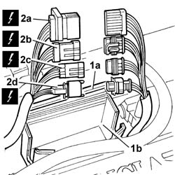
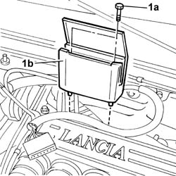
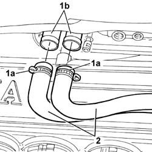
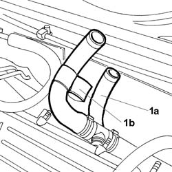
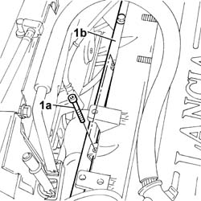
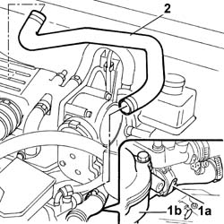

5010A12 engine/heater line - r r
- Path
- Procedures > 50 auxiliary units > 5010 CLIMATE CONTROL - MISCELLANEOUS > 5010A HEATER WATER PIPES > 5010A12 engine/heater line - r r
- Kind
- repair procedure (removal / refitting; the operation number is the code)
- Applies to
- all engines; all production periods
- Interactive page
- https://sloeber94.github.io/elrnDB-lThss/en/#/79035
Applies to: all engines; all production periods
 Removing
Removing
 Refitting
Refitting- Open the boot and disconnect the negative battery terminal.
- Position the vehicle on a lift.
See in Op. 7040D50 ENGINE COMPARTMENT UPPER SOUND INSULATION SHIELD - R.R.
See in Op. 7055B54 PROTECTION/GUARD under engine - R.R.
- Prepare a suitable container for collecting the engine coolant.
- Press the springs manually an disconnect the rapid connector for the lower radiator hose and drain the cooling system.
- Connect the hose to the radiator.
See in Op. 7055A54 NO. PLATE HOLDER - R.R.
- Lower the lift.
See in Op. 5040A10 Air conditioning coolant circuit - Drying and Repressurizing
Applies to: engines: 2.4 JTD 10V; all production periods
Applies to: engines: 2.4 20V; all production periods
See in Op. 1016A40 Ignition COIL COVER on cylinder head - R.R.
Applies to: engines: 2.0 TB; all production periods
See in Op. 1016A40 Ignition COIL COVER on cylinder head - R.R.
Applies to: engines: 3.0 V6, 3.2 V6; all production periods
1. Open the cover (1a) for the connector protective casing (1b).
2. Disconnect the connectors (2a), (2b), (2c), (2d) and place the electrical wiring away from the work area.
 | Description | Connector |
|---|---|---|
2a | Front/engine coupling | D004 |
| Description | Connector |
|---|---|---|
2b | Lambda sensor on catalyzer | K017 |
| Description | Connector |
|---|---|---|
2d | Detonation sensor - 2 | K050 |
| Description | Connector |
|---|---|---|
2c | Lambda sensor on catalyzer 2 | K018 |

Applies to: engines: 3.0 V6, 3.2 V6; all production periods
1. Undo the fixing bolts (1a) and remove the protective connector casing (1b).

Applies to: engines: 3.0 V6, 3.2 V6; all production periods
See in Op. 1056B82 Injection/ignition system CONTROL UNIT (one) - R.R.
Applies to: all engines; all production periods
See in Op. 1048A28 vacuum air circuit resonator pipe - r+r
See in Op. 1048A48 HOSE BETWEEN RESONATOR AND THROTTLE CASING - R.R.
See in Op. 5040A72 Pipe from expansion valve to coupling - R.R.
See in Op. 5040B30 Expansion VALVE (tube orifice) - R.R.
1. Break the bands fastening the heater supply and return pipes (1a) at the heater connectors (1b).
2. Disconnect the pipes from the heater inlet and outlet connectors.

Applies to: all engines; all production periods
1. Release the heater supply pipe (1a) from the outer casing (1b).

Applies to: engines: 3.0 V6, 3.2 V6; all production periods
1. Undo the bolt (1a) fixing the rigid pipe (1b) and move it aside.

Applies to: all engines; all production periods
1. Disconnect the heater water supply pipe from the thermostat unit (1a), loosening the fastening band (1b).
2. Remove the heater water supply pipe.

Applies to: all engines; all production periods
Refitting
Removing- Fit the pipe on the thermostat unit using the band.
- Fit the heater water supply pipe in the outer casing.
- Fit the water return and supply pipes to the heater connectors using new bands.
Applies to: engines: 3.0 V6, 3.2 V6; all production periods
- Tighten the rigid pipe fixing bolts.
See in Op. 5040B30 Expansion VALVE (tube orifice) - R.R.
See in Op. 5040A72 Pipe from expansion valve to coupling - R.R.
See in Op. 1056B82 Injection/ignition system CONTROL UNIT (one) - R.R.
Applies to: all engines; all production periods
See in Op. 1048A28 vacuum air circuit resonator pipe - r+r
See in Op. 1048A48 HOSE BETWEEN RESONATOR AND THROTTLE CASING - R.R.
Applies to: engines: 3.0 V6, 3.2 V6; all production periods
- Fit the connector protective casing.
- Connect the electrical connectors for the front/engine coupling, the Lambda sensors and the detonation sensor.
| Description | Connector |
|---|---|---|
. | Front/engine coupling | D004 |
| Description | Connector |
|---|---|---|
. | Lambda sensor on catalyzer | K017 |
| Description | Connector |
|---|---|---|
. | Detonation sensor - 2 | K050 |
- Close the connector protective casing cover.
Applies to: engines: 2.4 JTD 10V; all production periods
Applies to: engines: 2.4 20V; all production periods
See in Op. 1016A40 Ignition COIL COVER on cylinder head - R.R.
Applies to: engines: 2.0 TB; all production periods
See in Op. 1016A40 Ignition COIL COVER on cylinder head - R.R.
Applies to: all engines; all production periods
- Top up the coolant level in the engine cooling circuit.
- Connect the negative battery terminal.
See in Op. 5040A10 Air conditioning coolant circuit - Drying and Repressurizing
See in Op. 7040D50 ENGINE COMPARTMENT UPPER SOUND INSULATION SHIELD - R.R.
Topics linked from this page (11)
- 1016A10 SOUND-PROOFING COVER - R.R.
- 1016A40 Ignition COIL COVER on cylinder head - R.R.
- 1048A28 vacuum air circuit resonator pipe - r+r
- 1048A48 HOSE BETWEEN RESONATOR AND THROTTLE CASING - R.R.
- 1056B82 Injection/ignition system CONTROL UNIT (one) - R.R.
- 5040A10 Air conditioning coolant circuit - Drying and Repressurizing
- 5040A72 Pipe from expansion valve to coupling - R.R.
- 5040B30 Expansion VALVE (tube orifice) - R.R.
- 7040D50 ENGINE COMPARTMENT UPPER SOUND INSULATION SHIELD - R.R.
- 7055A54 NUMBERPLATE HOLDER - R+R
- 7055B54 PROTECTION/GUARD under engine - R.R.